원자력기사 (2011-09-03 기출문제)
1과목: 원자력기초
1. 핵분열로 방출되는 즉발중성자와 지발중성자에 대한 설명 중 맞는 것은?
- 지발중성자의 생성원리는 즉발중성자와 다르다.
- 지발중성자의 평균에너지는 즉발중성자와 같다.
- 감속과정에서 누설될 확률은 지발중성자가 즉발중성자보다 크다.
- 지발중성자 분율이 작을수록 원자로 제어에 유리하다.
(정답률: 알수없음)

2. 중성자 확산방정식에 사용되는 Fick’s Law가 잘 적용되는 법칙은?
- 중성자 흡수 단면적이 큰 매질 근처
- 노심의 바깥 경계면 주위
- 중성자가 등방성 산란을 하는 곳
- 중성자 선원이 있는 곳
(정답률: 알수없음)
3. 다음 중수소(Deutron : D)에 관한 설명 중 틀린 것은?
- 중수소의 원자핵을 중양자라고 한다.
- 질량은 중성자 질량의 약 2배이다.
- 질량수는 2이다.
- 핵외전자는 2개이다.
(정답률: 알수없음)
4. 다음 중 양자수와 중성자수가 모두 마법수(Magic Number)인 핵종이 아닌 것은?
- 42H
- 4020Ca
- 9040Zr
- 20882Pb
(정답률: 알수없음)
5. 무한 증배계수(K∞)를 구성하는 4인자 중 붕산농도의 증가에 따라 감소하는 것은?
- 속분열인자
- 공명이탈확률
- 열중성자 이용률
- 중성자 재생계수
(정답률: 알수없음)
6. 동일한 형태의 A, B의 원자로가 있다. A는 50%, B는 100% 출력으로 운전하다가 동시에 정지되었다. 정지 후 노심에서 생성되는 제논(Xe135)에 대한 설명 중 맞는 것은?
- 제논농도의 첨두값은 B가 크고, 각각의 첨두값에 도달하는데 걸리는 시간은 A가 짧다.
- 제논농도의 첨두값은 A가 크고, 각각의 첨두값에 도달하는데 걸리는 시간은 B가 짧다.
- 제논농도의 첨둑값은 B가 크고, 각각의 첨두값에 도달하는데 걸리는 시간은 서로 같다.
- 제논농도의 첨두값은 A가 크고, 각각의 첨두값에 도달하는데 걸리는 시간은 서로 같다.
(정답률: 알수없음)
7. 버클링(Buckling)에 대한 다음 설명 중 틀린 것은?
- 중성자 비누설확률을 계산할 때 사용된다.
- 중성자속의 공간분포 곡률을 나타낸다.
- 반경 R인 구형 원자로의 기하학적 버클링은
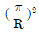
이다. - 기하학적 버클링이 물질버클링보다 크면, 초임계 상태이다.
(정답률: 알수없음)
8. 중성자와 탄성 산란에서 표적 핵의 질량수 A와 평균대수에너지감쇠계수(ζ)의 관계를 바르게 나타낸 것은?
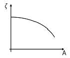
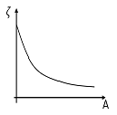
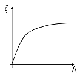
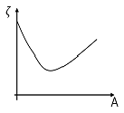
(정답률: 알수없음)
9. 다음 중 가압경수로에서 제어봉 제어값(Control Rod Worth)이 증가하는 경우는?
- 붕산농도의 증가
- 감속재 온도의 증가
- 핵연료 내 의 증가
- 인접한 곳에 다른 제어봉 삽입
(정답률: 알수없음)
10. 어떤 균질 원자로를 구성하는 물질의 거시적 흡수 단면적(∑a)이 아래와 같다. 이 원자로의 열중성자 이용률(Thermal Utilization Factor.f)은?
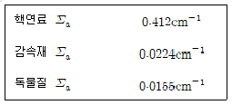
- 0.916
- 0.948
- 10.871
- 18.393
(정답률: 알수없음)
11. 그림에서 의 중성자빔 강도가 두께 의 물체를 통과하면 의 중성자빔(Beam)강도로 감소할 때, 이 물체의 거시적 단면적을 나타낸 식은?
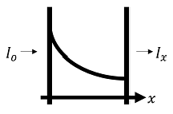
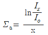
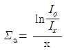
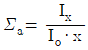
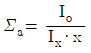
(정답률: 알수없음)
12. 출력운전 중인 원자로 내의 핵연료 및 감속재에서 속중성자속(ø1) 및 열중성자속(ø2) 분포를 나타낸 것은?
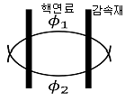
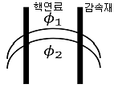
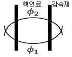
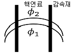
(정답률: 알수없음)
13. 아래의 중성자 확산 방정식에서 무한매질일 때, 필요 없는 항은?
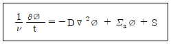
- S
- ∑aø
- D▽2ø
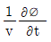
(정답률: 알수없음)
14. 원자로에서 10pcm의 반응도를 주입했을 때, 원자로의 안정주기는? (단, 원자로 내에는 즉발중성자만 존재하고, 즉발중성자의 평균수명은 10-4sec이다.)
- 1초
- 0.1초
- 0.01초
- 0.001초
(정답률: 알수없음)
15. 원자로 출력이 100W인 원자로에 반응도를 주입하였더니 20초 후에 출력이 300W가 되었다. 원자로 주기는?
- 약 8초
- 약 18초
- 약 23초
- 약 30초
(정답률: 알수없음)
16. 도플러 효과란?
- 핵연료 온도가 증가하면서 공명흡수와 공명이탈확률이 감소하는 현상
- 핵연료 온도가 감소하면서 공명흡수는 증가하고 공명이탈확률은 감소하는 현상
- 핵연료 온도가 증가하면서 공명흡수는 증가하고 공명이탈확률은 감소하는 현상
- 핵연료 온도가 감소하면서 공명흡수와 공명이탈확률이 감소하는 현상
(정답률: 알수없음)
17. 실온 300°Ｋ에서 감속재와 열평형을 이루고 있는 중성자의 평균 에너지는?
- 약 0.025eV
- 약 0.039eV
- 약 0.25MeV
- 약 0.5MeV
(정답률: 알수없음)
18. 감속재가 흑연인 원자로에서 1MeV 중성자가 감속재와 연속적인 충돌을 통해 1eV로 감속되었다. 평균 충돌 횟수는? (단, 흑연의 평균대수에너지감쇠계수(ζ) 값은 0.15로 가정하고, ln10=2.3이다.)
- 약 14회
- 약 34회
- 약 67회
- 약 87회
(정답률: 알수없음)
19. 다음 중 핵원료성 핵종(Fertile Nuclide : 핵원료물질)이 아닌 것은?
- 232Th
- 234U
- 238U
- 239Pu
(정답률: 알수없음)
20. 운전 중인 원자로는 3300MW 열출력을 내고 있다. 이 원자로의 핵분열율은?
- 1.03×1020fissions/s
- 1.03×1021fissions/s
- 1.03×1022fissions/s
- 1.03×1023fissions/s
(정답률: 알수없음)
2과목: 핵재료공학 및 핵연료관리
21. 사용 후 연료 재처리 시설에서 발생되는 고준위 액체 방사성폐기물을 고형화하기 위해 가장 많이 사용되고 있는 재료는?
- 아스팔트
- 시멘트
- 유리
- 콘크리트
(정답률: 알수없음)
22. 연료를 노심에 장전하기 전 취급이나 운송 시에 피복재 내에서 펠렛이 이동하는 것을 방지할 목적으로 넣는 구성품은?
- 헬륨 기체
- 플래넘 스프링
- 지지격자 딤플 및 스프링
- 블랭킷
(정답률: 알수없음)
23. 경수로의 비순환 핵주기(Once-Through Fuel Cycle)를 바르게 표현한 것은?
- 채광 및 정련 → 농축 → 변환 → 성형가공 → 원자로 연소 → 사용 후 연료 저장 → 사용 후 연료 처분
- 채광 및 정련 → 변환 → 농축 → 성형가공 → 원자로 연소 → 사용 후 연료 저장 → 사용 후 연료 처분
- 채광 및 정련 → 농축 → 변환 → 성형가공 → 사용 후 연료 저장 → 원자로 연소 → 사용 후 연료 처분
- 채광 및 정련 → 농축 → 성형가공 → 원자로 연소 → 사용 후 연료 저장 → 변환 → 사용 후 연료 처분
(정답률: 알수없음)
24. 선행 핵연료주기에서 농축된 UF6를 UO2분말로 만드는 공정은?
- 정련
- 변환
- 농축
- 재변환
(정답률: 알수없음)
25. 휘발성이 크고 보건물리 측면에서 중요하게 간주되며 핵연료 결함의 탐지에 사용되는 할로겐 원소 그룹의 핵종은?
- 방사성 요오드
- 삼중수소
- 방사성 세슘
- 방사성 제논
(정답률: 알수없음)
26. 다음 중 마이너액티나이드(Minor Actinides)가 아닌 것은?
- Am(아메리슘)
- Cm(퀴륨)
- Np(넵튜늄)
- Pu(플루토늄)
(정답률: 알수없음)
27. 방사성 폐기물 처분시설로부터 폐기물이나 방사성 핵종의 유출을 지연시키거나 제한하기 위해 설치하는 인공적인 구조물은?
- 구조적 방벽
- 공학적 방벽
- 지연 방벽
- 천연 방벽
(정답률: 알수없음)
28. 가압경수로형 원전의 피복재 재질로서 하프늄(Hf)의 성분이 제고된 지르코늄(Zr) 합금을 주로 사용하는 가장 큰 이유는?
- Hf의 열중성자 반응단면적이 크기 때문에
- Hf의 속중성자 반응단면적이 크기 때문에
- Hf의 밀도가 작기 때문에
- Hf의 용융점이 낮기 때문에
(정답률: 알수없음)
29. 기체, 액체 및 고체 방사성 폐기물 관리의 기본 원칙이 아닌 것은?
- 희석
- 분산
- 농축
- 신속배출
(정답률: 알수없음)
30. 원자로에서 핵연료가 연소됨에 따라 핵분열성 물질이 감소되는 현상을 사용 후 연료 습식저장조의 핵임계 해석에서 고려하는 개념은?
- 핵분열 손실
- 핵분열 이득
- 연소도 손실
- 연소도 이득
(정답률: 알수없음)
31. 사용후연료 재처리 방법 중 플루토늄만을 따로 분리하지 않고 우라늄 등과 함께 모든 초우라늄원소(Trans Uranium)를 분열생성물로부터 분리하는 것으로 핵확산 저항성이 큰 재처리 기술은?
- PUREX
- Pyro – Process
- REDOX
- BUTEX
(정답률: 알수없음)
32. 부식이 금속표면의 국부에만 집중하고 이 부분에서의 부식속도가 특히 빨라서 금속 내로 깊이 뚫고 들어가는 심한 국부부식 형태로 발생하는 부식의 종류는?
- 이종금속 접촉부식
- 임계부식
- 점식(Pitting)
- 침식부식
(정답률: 알수없음)
33. 우라늄 농축방법에 대한 설명 중 맞는 것은?
- 동위원소 가스가 열평형 상태에 있을 때 서로 다른 질량을 갖는 원소의 운동속도 차이를 이용하여 분리하는 방법으로 원심분리법이 있다.
- 동위원소 원자흡수 스펙트럼의 차이를 이용하여 분리하는 방법으로 레이저법이 있다.
- 기체확산법, 원심분리법, 화학교환법, 레이저법 등이 현재 상용화되어 있다.
- 동위원소 가스가 어느 힘이 생성되고 있는 곳에 도달하면, 질량의 차이로 인하여 서로 다른 운동을 하는 원리를 이용하여 분리하는 방법으로 기체확산법이 있다.
(정답률: 알수없음)
34. 가압경수로형 원전 1차 계통의 수화학 처리에 관한 설명 중 틀린 것은?
- 장주기 운전은 CRUD 발생을 억제하며 비정상 축방향 출력편차를 완화시키는데 기여한다.
- 용존산소는 발전소 기동 시 배기 또는 진공 충수한 뒤 하이드라진과 수소로 제거한다.
- 용존수소는 냉각재를 환원상태로 유지하여 계통부식을 최소화한다.
- 수산화리튬은 냉각재계통 PH 제어를 위해 사용한다.
(정답률: 알수없음)
35. 60Co의 시료를 계수하였더니, 그 계수율이 70,000cpm이었다. 48,000cpm으로 감소되는데 걸리는 시간은 얼마인가? (단, 60Co의 반감기는 5.26년이다.)
- 1.98년
- 2.63년
- 2.86년
- 3.61년
(정답률: 알수없음)
36. 액체폐기물 처리를 위한 이온 교환 공정의 장점이 아닌 것은?
- 고순도의 유출물을 얻을 수 있다.
- 제염계수가 비교적 높다.
- 염의 농도 및 부유고형물의 농도가 높아도 처리가 가능하다.
- 핵종에 따라 이온교환 물질을 선택할 수 있다.
(정답률: 알수없음)
37. 세라믹 핵연료에 대한 설명으로 틀린 것은?
- 열전도도가 매우 낮고 온도가 상승할수록 감소한다.
- 열전도도는 밀도와 가공도에 따라 변한다.
- 기계적 성질은 실온에서 깨지기 쉽고 파괴강ㄷ는 기공도와 결정립이 적을수록 크다.
- 결정의 이방성 때문에 핵연료 사용 시 사용온도를 662℃로 한정해야 한다.
(정답률: 알수없음)
38. 국내 가압중수로형 원전에서 사용하고 있는 사용 후 연료의 건식저장방식은?
- Vault Storage 방식
- Concrete Modular Storage 방식
- Concrete Silo 방식
- Transport and Storage 방식
(정답률: 알수없음)
39. 재처리 시설의 방사성 기체폐기물에 대한 설명 중 잘못된 기술된 것은?
- 제논은 반감기가 길어 1년 이상 된 사용후연료 처리 시 피폭에 주의해야 한다.
- 재처리 시 대부분의 기체 방사능은 불활성 기체인 Kr이다.
- 요오드의 제거를 위해 고체흡착법이 사용된다.
- 경수로형 지르칼로이 불용해성 피복재(Hull)의 경우 삼중수소를 포함하고 있다.
(정답률: 알수없음)
40. 원전에서 출력운전 중 핵연료의 건전성을 확인하는 방법이 아닌 것은?
- 냉각재 요오드 방사능 분석
- 연료봉 초음파 검사
- 지발중성자 검출
- 냉각재 세슘 방사능 분석
(정답률: 알수없음)
3과목: 발전로계통공학
41. 원전 출력운전 중 증기발생기의 수위수축(Shrink)현상이 발생되는 원인을 알맞게 연결된 것은?
- 주증기 격리밸브 차단, 터빈부하의 급격한 감소
- 터빈부하의 급격한 감소, 증기덤프 동작
- 주증기 격리밸브 차단, 증기덤프 동작
- 주증기 격리밸브 차단, 터빈부하의 급격한 감소, 증기덤프 동작
(정답률: 알수없음)
42. 유체의 Venturi 유량계의 측정원리와 관련하여 유량 Q와 차압 DF의 관계는?
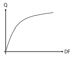
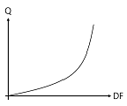
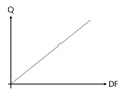
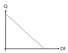
(정답률: 알수없음)
43. 중성자 조사에 의해 취성화된 원자로 용기에 가압열충격(PTS)을 일으킬 수 있는 경우가 아닌 것은?
- 안전주입계통 동작
- 보조급수계통 동작
- 격납건물 환기계통 차단
- 주증기관 파단사고
(정답률: 알수없음)
44. 원자로 압력용기의 취성파괴를 방지하기 위한 대책으로 틀린 것은?
- 냉각재의 급격한 온도변화를 피한다.
- 용접부위에 구리(Cu)의 함유량을 증가시킨다.
- 1MeV 이상의 속중성자 조사를 감소시킨다.
- 운전 중 저온과압 현상을 피한다.
(정답률: 알수없음)
45. 다음의 고에너지 중성자 조사에 의한 원자로 압력용기의 기계적 물성치 변화들을 모두 바르게 연결한 것은?
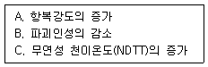
- A, B
- B, C
- A, C
- A, B, C
(정답률: 알수없음)
46. 가압경수로형 원전의 1차 계통 주요 기기에 연결된 노즐 중에서 운전온도가 가장 높은 곳은?
- 가압기 입구 노즐
- 원자로 압력용기 입구 노즐
- 원자로 압력용기 출구 노즐
- 증기발생기 입구 노즐
(정답률: 알수없음)
47. 가압경수로형 원전에서 수행되고 있는 원자로 압력용기 감시시편에 대한 설명 중 틀린 것은?
- 감시시험은 중성자 조사에 의한 원자로 압력용기의 기계적 물성치 변화를 감시하기 위해 수행된다.
- 감시시험용 시편이 내장된 캡슐은 노심 중앙의 핵연료 집합체 사이에 설치된다.
- 시편이 내장된 캡슐에는 온도와 중성자속을 감시하기 위한 감시자가 함께 장입된다.
- 감시시편 결과로부터 원자로 운전을 위한 압력-온도 제한곡선을 생산한다.
(정답률: 알수없음)
48. 다음 중 원자로 압력용기가 가압열충격(PTS)에 의해 파손될 수 있는 기본조건이 아닌 것은?
- 중성자 조사에 의해 원자로 압력용기가 취화되어 있다.
- 원자로 압력용기 내면에 스테인레스강이 피복되어 있다.
- 원자로 압력용기 벽면에 임계크기 이상의 균열이 존재한다.
- 비상냉각수 주입에 의해 원자로압력용기의 벽면이 급냉된다.
(정답률: 알수없음)
49. 원형관에서 층류 유체의 마찰에 의한 압력강하에 대한 설명 중 틀린 것은?
- 원형관의 길이가 길어질수록 압력강하는 커진다.
- 원형관의 직경이 커질수록 압력강하는 감소한다.
- 유체의 유속이 빨라질수록 압력강하는 증가한다.
- 유체의 점성도가 높을수록 압력강하는 감소한다.
(정답률: 알수없음)
50. 가압경수로형 원전의 화학 및 체적제어계통(CVCS)의 기능이 아닌 것은?
- 냉각재 재고량 유지
- 원자로 저온정지 유지
- 냉각재 펌프 밀봉수 공급
- 붕소농도 제어
(정답률: 알수없음)
51. 비상노심냉각계통의 설계기준이 아닌 것은?
- 피복재 온도가 허용기준을 초과하지 않아야 한다.
- 피복재의 산화 및 수소의 발생량이 허용기준 이하이어야 한다.
- 핵연료 변형이 노심냉각을 저해하지 아니하여야 한다.
- 증기발생기의 구조적 건전성을 유지하여야 한다.
(정답률: 알수없음)
52. 표준형 원전의 디지털 원자로 보호계통으로 사용되는 노심보호연산기(CPC)에서 지시하는 것으로 맞게 연결된 것은?
- 정지여유도, 핵비등이탈률
- 정지여유도, 국부출력밀도
- 핵비등이탈률, 국부출력밀도
- 감속재온도계수, 임계열유속
(정답률: 알수없음)
53. 가압경수로형 원전의 가압기의 기능에 대한 설명 중 틀린 것은?
- 냉각재 계통의 압력을 제어한다.
- 가열 및 냉각 시에 냉각재의 체적변화에 대한 완충역할을 한다.
- 저온정지 운전 시 가압기 내부는 물로 가득차 있다.
- 출력운전 시 가압기 내부는 포화증기로만 가득차 있다.
(정답률: 알수없음)
54. 가압중수로형 CANDU 원자로에서 중수를 감속재로 사용하는 주된 이유는?
- 경수보다 저렴하다.
- 경수보다 비등점이 낮다.
- 경수보다 감속비가 크다.
- 경수보다 감속능이 크다.
(정답률: 알수없음)
55. 다음 중 원형관에서 Nusselt 수에 대한 설명으로 틀린 것은?
- 작동유체의 열전달 능력이 좋을수록 크다.
- 열원 벽면의 열전도도가 클수록 크다.
- 작동유체의 등가직경이 클수록 크다.
- Reynolds 수와 Prandtl 수의 함수이다.
(정답률: 알수없음)
56. 다음은 증기발생기 튜브에서 사용되고 있는 재질들이다. 이들 재질 중 응력부식균열 SCC에 대한 저항성이 가장 우수한 것은?
- Alloy-600 LTMA(Low Temperature Mill Annealed)
- Alloy-600 HTMA(High Temperature Mill Annealed)
- Alloy-600 TT(Thermal Treatment)
- Alloy-690 TT(Thermal Treatment)
(정답률: 알수없음)
57. 다음 그림은 가압경수로형 원전의 핵연료 중심 , 핵연료 표면 , 피복재 표면 그리고 냉각재 의 축방향 온도분포를 나타낸 것이다. 다음 중 잘못 나타낸 것은?
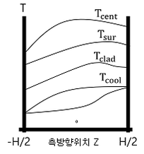
- 핵연료 중심온도 Tcent 분포
- 핵연료 표면온도 Tsuf 분포
- 피복재 표면온도 Tclad 분포
- 냉각재 온도 Tcool 분포
(정답률: 알수없음)
58. 배관이 파단되어 물이 대기로 14m/sec의 유속으로 솟아오르고 있다. 이 물은 얼마나 높이 올라갈 수가 있겠는가? (단, 배관의 마찰 및 형상변화에 따른 손실은 없다고 가정한다.)
- 5m
- 7m
- 10m
- 20m
(정답률: 알수없음)
59. 증기발생기 튜브 손상 중 구조물 또는 이물질과 접촉하여 발생하는 손상 메커니즘은?
- 응력부식균열(SCC)
- 프레팅 마모
- 점식(Pitting)
- 부식
(정답률: 알수없음)
60. 원자로 노심 외측에 설치된 열차폐체의 기능이 아닌 것은?
- 압력용기 조사손상 감소
- 압력용기 열응력 감소
- 압력용기 부식방지
- 압력용기 사용수명 연장
(정답률: 알수없음)
4과목: 원자로 안전과 운전
61. 다음 중 ANSI/ANS N18.2 (1973)에서 분류한 Condition IV에 해당하는 사건은?
- 냉각재펌프 로커 고착
- 제어봉 낙하
- 주급수펌프 고장
- 소외전원 상실
(정답률: 알수없음)
62. 국내 가압경수로형 원전의 보조급수펌프는 전기로 동작하는 펌프와 증기로 동작하는 펌프를 함께 설치하고 있다. 이는 다음 중 어떤 설계원리를 적용한 것인가?
- 다중성
- 다양성
- 독립성
- 고장 시 안전
(정답률: 알수없음)
63. 가압경수로형 원전의 공학적 안전설비로 맞는 것은?
- 화학 및 체적제어계통
- 주급수계통
- 원자로 격납건물 살수펌프
- 냉각재 펌프
(정답률: 알수없음)
64. 다음 중 국내가압경수로형 원전의 원자로 정지계통에 대한 설명으로 틀린 것은?
- 제어봉 구동장치의 전원이 상실 시 제어봉이 삽입된다.
- DNBR이 제한치보다 높으면 원자로가 정지된다.
- 2차 계통의 열제거 능력이 상실되면 원자로가 정지된다.
- 기동중 중성자속의 증가율이 제한치보다 높으면 원자로가 정지된다.
(정답률: 알수없음)
65. 사고가 발생한 체르노빌 원전에 대한 설명 중 맞는 것은?
- 천연우라늄을 연료로 사용하였다.
- 철판을 내부에 붙인 격납건물이 있었다.
- 원자로 감속재로 중수를 사용하였다.
- 원자로 냉각재로 경수를 사용하였다.
(정답률: 알수없음)
66. 원자로 기동 시 RCP에서 발생되는 열보다 핵분열에 의해 방출되는 열이 많아지면서 원자로 출력이 증가하면 부반응도가 인가되는 현상이 나타나는 점은?
- 열 방출점
- 도플러 현상점
- 등온 온도계수점
- 감속재 온도계수점
(정답률: 알수없음)
67. 다음 중 가압경수로형 원전에 사용되는 가연성 독물질봉에 대한 설명으로 틀린 것은?
- 원자로 운전 초기의 잉여반응도를 제어하기 위해 사용한다.
- 원자로 내의 출력분포를 평탄하게 하기 위하여 사용한다.
- 중성자를 흡수함에 따라 중성자 산란단면적이 커진다.
- 임계 붕산농도를 낮춤으로 감속재 온도계수가 정(+) 이되는 것을 방지한다.
(정답률: 알수없음)
68. 다음 중 원자로가 일정한 출력으로 장시간 운전되다가 갑자깆 정지하였을 때, 원자로 내 독물질인 Xe, Sm의 변화를 맞게 설명한 것은?
- Xe의 농도가 증가하다 충분한 시간이 경과 후 일정한 값으로 유지
- Xe의 농도가 감소하다 충분한 시간이 경과 후 일정한 값으로 유지
- Sm의 농도가 증가하다 충분한 시간이 경과 후 일정한 값으로 유지
- Sm의 농도가 감소하다 충분한 시간이 경과 후 일정한 값으로 유지
(정답률: 알수없음)
69. 다음 중 가압경수로형 원전의 원자로 내부온도가 증가할 때 발생하는 현상으로 맞는 것은?
- 우라늄 연료의 공명 흡수단면적 감소
- 냉각재의 중성자 감속능력 증가
- 원자로 유효 증배계수의 증가
- 수용성 독물질의 중성자 흡수 감소
(정답률: 알수없음)
70. 다음 중 가압경수로형 원전에서 사고 시 방사성 물질을 누출을 방지하기 위한 방벽이 아닌 것은?
- 연료 피복재
- 순환수 배관
- 증기발생기 튜브
- 주증기 격리밸브
(정답률: 알수없음)
71. 정상운전 중 피복재의 건전성은 무엇에 의해 보증되는가?
- 2차측 화학제어
- 유출수 제어 시 제한사항 준수
- 선출력밀도를 높게 유지
- 노심 열출력의 제한치 이내 유지
(정답률: 알수없음)
72. DNBR의 정의로 맞는 것은?
- 연료봉의 어느위치에서든 실제 열속을 임계 열속으로 나눈 값
- 연료봉의 어느 위치에서든 임계 열속을 실제 열속으로 나눈 값
- 노심 열출력을 냉각재 총 유량률로 나눈 값
- DNB에 도달한 냉각재 채널수를 과냉각 채널수로 나눈 값
(정답률: 알수없음)
73. 최대 선출력밀도(Linear Power Density를 제한하는 이유는?
- 연료의 건전성 보증
- 제논진동 방지
- 연료에 제작오차를 주기 위함
- 핵비등 방지
(정답률: 알수없음)
74. 원자로가 전출력 100%으로 운전 중 원자로가 정지되어 예상 임계점을 계산하려고 한다. 예상 임계점 관련 운전변수와 거리가 먼 것은?
- 제어봉 위치
- 출력 결손
- 붕산 농도
- 가압기 압력과 수위
(정답률: 알수없음)
75. 다음 조건하의 연료 피복재 표면에서의 평균 열속은?
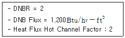
- 300 Btu/hr-ft2
- 600 Btu/hr-ft2
- 1,200 Btu/hr-ft2
- 2,400 Btu/hr-ft2
(정답률: 알수없음)
76. 원자력발전소에서 일반주민의 출입 및 거주를 통제하기 위하여 설정하는 구역은?
- 방사선 관리구역
- 제한구역
- 저밀도 구역
- 방사선 비상계획구역
(정답률: 알수없음)
77. 가압경수로형 원전의 노심 반응도 제어에 관한 설명 중 틀린 것은?
- 노심 반응도 제어는 CVCS을 통한 붕산의 희석 및 주입과 노심에 제어봉 집합체를 삽입 및 인출하는 두 가지 방법이 있다.
- 제어봉은 노심 반응도를 신속히 변경시커야 할 경우에는 제논진동을 완화시켜 국부적인 반응도 제어를 가능하게 한다.
- 붕산수는 감속재에 균일하게 용해되어 있으므로 독물질 농도가 편중되어 나타날 수 있는 국부적인 과잉 열속 현상을 최소화 시킬 수 있다.
- 붕산에 의한 반응도 제어는 감속재 내의 균일한 붕산농도 분포로 인하여 축방향 출력분포를 변경하는 것이 용이하다.
(정답률: 알수없음)
78. 가압경수로형 원자로 사고해석에서 단일 제어봉 집합체 인출사고는 회귀빈도로 분류되는데, 이 사고는 ANSI N18.2의 구분에 의하면 어떠한 상태에 속하는가?
- Condition I
- Condition II
- Condition III
- Condition IV
(정답률: 알수없음)
79. 핵연료 주기 운용에 드는 비용은 크게 직접비와 간접비로 구성되어 있다. 다음 중 직접비에 해당하는 것은? (문제 오류로 실제 시험에서는 1, 4번이 정답처리 되었습니다. 여기서는 1번을 누르면 정답 처리 됩니다.)
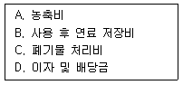
- A, B, C
- A, B, D
- A, C, D
- B, C, D
(정답률: 알수없음)
80. 원전사고 고장등급 INES은 0등급부터 7등급까지 8개의 등급으로 분류한다. 다음 등급 중 틀린 것은?
- 일본 미하마원전 증기발생기 튜브 누설사고 : 2등급
- TMI 원전사고 : 5등급
- 도카이무라 핵임계사고 : 5등급
- 후쿠시마 원전사고 : 5등급
(정답률: 알수없음)
5과목: 방사선이용 및 보건물리
81. 다음 중 휴대용 방사선 계측기에서 마이카(Mica) 창이 달린 것을 사용하는 이유는?
- Z가 낮은 물질이 베타선을 측정할 수 있도록 해주기 때문
- 무게를 가볍게 하고 제작비용을 줄이기 위함
- 방사선 측정의 기하학적 효율을 보정해 줄 수 있기 때문
- 심부선량에 등가하는 측정값을 얻을 수 있기 때문
(정답률: 알수없음)
82. 다음 목적으로 사용되는 방사성 동위원소가 순서대로 바르게 연결된 것은?
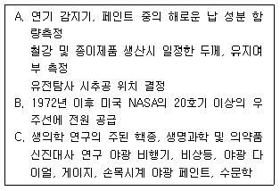
- Am, Pu, H
- Am, Pu, C
- Am, Tc, H
- Tc, Pu, C
(정답률: 알수없음)
83. 다음 중 맞는 것끼리 연결된 것은?
- A, B
- A, C
- B, C
- B, D
(정답률: 알수없음)
84. 다음 중 고선량 및 고선량률 피폭조건과 저선량 및 저선량률 피폭조건에서 방사선의 생물학적 영향 크기와 차이점을 설명하는 것은?
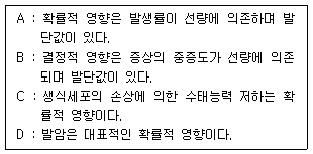
- 명목위험계수
- 선량효과인자
- 상대 생물학적 효과비
- 생물학적 반감기
(정답률: 알수없음)
85. 1MBq의 60Co의 점선원에서 1m 떨어진 곳에서의 감마선속은?
- 약 8γ/cm2·sec
- 약 16γ/cm2·sec
- 약 25γ/cm2·sec
- 약 2,500 γ/cm2·sec
(정답률: 알수없음)
86. GM계수기의 동작특성에서 계수손실이 생기는 이유는?
- 분해시간
- 플라토우
- 소멸작용
- 가스증폭율
(정답률: 알수없음)
87. 방사성 물질의 체내피폭에 대한 설명 중 맞는 것끼리 연결된 것은?
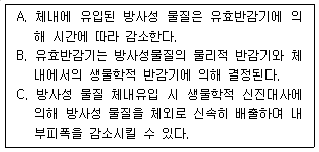
- A, B
- B, C
- A, C
- A, B, C
(정답률: 알수없음)
88. 1MeV의 감마선의 물에 대한 반가층은? (단, 이 선원의 물에 대한 질량감쇄계수는 0.0707cm2/gr이다.)
- 약 0.9cm
- 약 1.1cm
- 약 9.8cm
- 약 12.1cm
(정답률: 알수없음)
89. 저준위 방사능 측정 시 정확도를 증가시키기 위한 방법이 아닌 것은?
- 계측기 주변을 차폐하여 자연계수율을 감소시킨다.
- 시료의 계수시간과 자연계수의 계수시간을 증가시킨다.
- 시료와 검출기의 거리를 감소시켜 기하학적 효율을 증가시킨다.
- x2을 실시하여 측정결과의 통계적 분포를 검증한다.
(정답률: 알수없음)
90. 고대 유적물에서 측정한 14C 동위원소가 93.75% 붕괴한 것으로 나타났다. 이 유적물 속의 14C는 반감기가 몇 번이나 지나갔는가?
- 2번
- 3번
- 4번
- 5번
(정답률: 알수없음)
91. 개봉선원의 취급에 대한 설명 중 맞는 것끼리 연결된 것은?
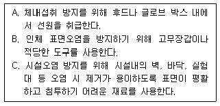
- A, B
- B, C
- A, C
- A, B, C
(정답률: 알수없음)
92. 다음 중 결정적 영향의 방지목적으로 사용되는 것은?
- 조사선량
- 등가선량
- 흡수선량
- 커마(Kerma)
(정답률: 알수없음)
93. 유도 공기중 농도(DAC)와 연간 섭취한도(ALI)와의 관계를 올바르게 설명한 것은?
- 1DAC의 공기를 하루 24시간, 1년 365일 계속 호흡하면 ALI
- 1DAC의 공기를 연간 2,000시간 균일하게 호흡하면 ALI에 도달
- ALI를 수면시간을 포함한 연간 공기 호흡량으로 나누면 DAC
- DAC와 ALI는 전혀 무관하다.
(정답률: 알수없음)
94. 60Co의 감마선에 대한 납의 반가층은 11mm이다. 60Co 감마선 세기를 1/32로 낮추기 위해 필요한 납 차폐체의 두께는?
- 2.2mm
- 5.5mm
- 11mm
- 55mm
(정답률: 알수없음)
95. 자유공기 전리함에 5MeV의 알파입자가 입사하였을 때 생기는 전하량은? (단, 공기의 W값은 34eV이다.)
- 약 2.35×10-14C
- 약 8×10-13C
- 약 1.6×10-12C
- 약 7×10-5C
(정답률: 알수없음)
96. 다음 중 어린이가 성인에 비해 방사선의 감수성이 높은 이류노 타당한 것은?
- 어린이의 세포가 더 약하기 때문
- 어린이의 세포가 더 빈번하게 분열하기 때문
- 어린이의 세포는 손상을 회복하는 능력이 떨어지기 때문
- 어린의 세포 크기가 작기 때문
(정답률: 알수없음)
97. 2MeV의 감마선 에너지 스펙트럼을 분석했을 때, 나타나는 피크와 그 에너지를 연결한 것 중 틀린 것은?
- 이중 이탈 피크 : 0.978meV
- 소멸 감마선 피크 : 1.02meV
- Compton Edge : 1.773MeV
- 광전 피크 : 2MeV
(정답률: 알수없음)
98. 계수율이 250cpm인 어떤 시료의 계수율 표준편차를 1%로 하기 위해서는 이 시료를 몇 분동안 측정해야 하는가?
- 4분
- 40분
- 100분
- 400분
(정답률: 알수없음)
99. 다음 중 인간 피부의 가장 외각에 위치하면서 그 아래에 위치에 있는 조직을 방사선으로부터 보호하는 층은?
- 진피층
- 기저층
- 과립층
- 각질층
(정답률: 알수없음)
100. 어느 실험실에서 톨루엔과 32P를 바닥에 흘렸다. 제염작업을 위해 사용할 제염방법(물질)으로 가장 좋은 것은?
- 내산성 방호복, 고무장갑, 흡수제
- 플라스틱 신발, 글러브 및 앞치마, 안면 방호구, 흡수제
- 실험실 가운, 고무장갑, 실내 환기
- 실험실 가운, 고무장갑, 탈염수를 이용한 희석
(정답률: 알수없음)
즉발중성자는 핵분열 반응에서 핵분열 생성물인 중성자가 방출되는 것이고, 지발중성자는 핵분열 반응에서 핵분열 생성물인 중성자가 원자로 주변 물질과 상호작용하여 생성되는 것이다. 따라서 생성원리가 다르다.
지발중성자의 평균에너지는 즉발중성자와 같을 수도 있지만, 핵분열 반응 조건에 따라 다를 수 있다.
감속과정에서 누설될 확률은 지발중성자가 즉발중성자보다 작을 수도 있다.
지발중성자 분율이 작을수록 원자로 제어에 유리하다는 것은 일반적으로 맞지만, 핵분열 반응 조건에 따라 다를 수 있다.